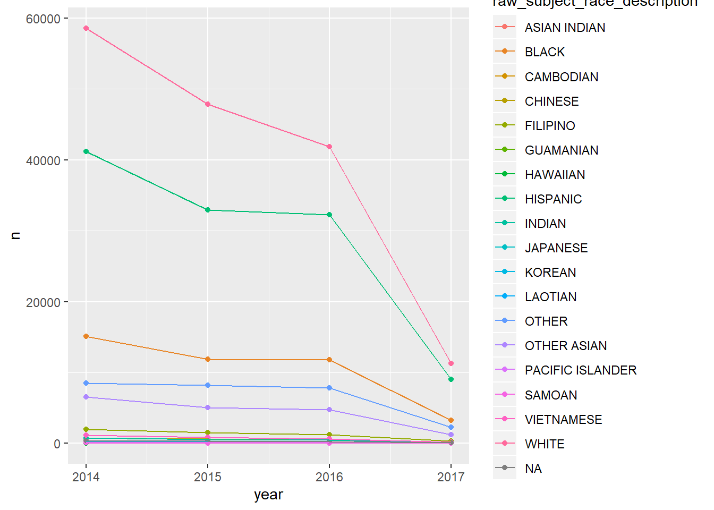
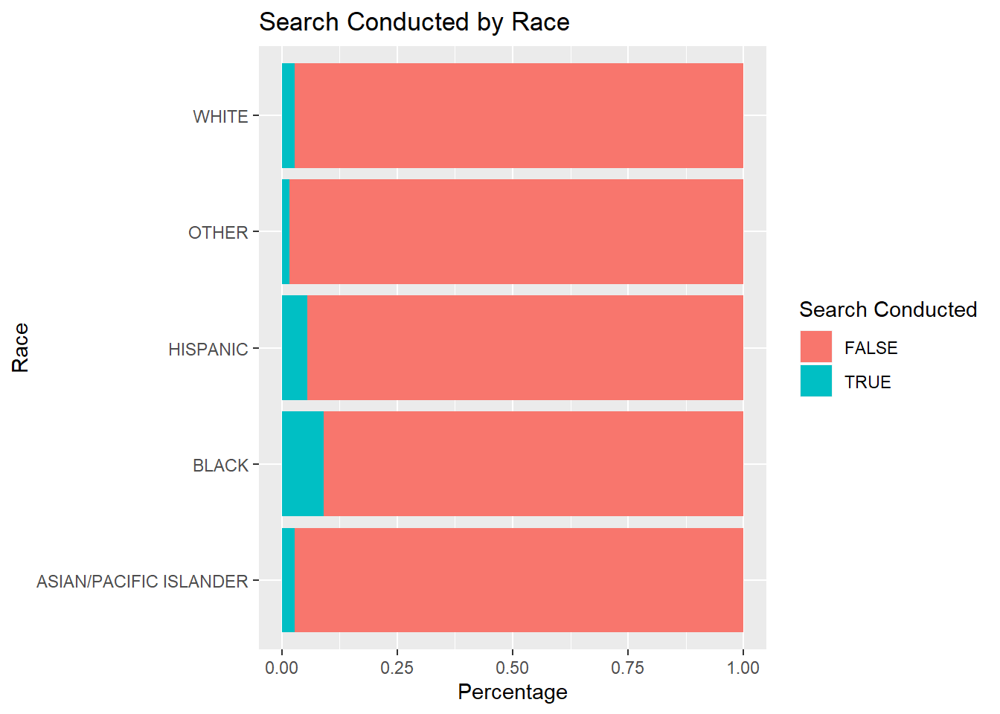

Chapter 5 Socioeconomic Factors in Durham
The reason behind a vehicle equipment stop seems to be an economical one, as drivers who have funds to fix their vehicles in the case of a broken tail light for example would be less likely to get stopped for an equipment violation. The plot is used to investigate this hypothesis, where, as median income increases, we look for the percentage of equipment violations to drop.
#manual data entry
incomeNC <- data.frame("city" = c("durham", "raleigh", "charlotte", "fayetteville", "greensboro"), "medianincome" = c(58190, 63891, 60886, 44057, 46702), "equipmentstops" = c(0.1327, 0.0845, 0.0653, 0.1344, 0.1026), "regulatorystops" = c(0.2067, 0.2480, 0.2166, 0.2632, 0.1758))
#plot for percent of equipment stops
equipment <- incomeNC %>%
ggplot() +
geom_point(aes(x = medianincome, y=equipmentstops)) +
geom_text(aes(x = medianincome, y=equipmentstops, label=city),hjust=0.5, vjust=-0.5) +
labs(title="Vehicle Equipment Stops vs Median Household Income")
equipment  This is a scatter plot of percentage of vehicle equipment stops against median household income (obtained from census.gov). The scatter plot reflects this relationship, however since there are so few observations, maybe more data is needed for a more comprehensive conclusion.
#plot for percent of regulatory stops
regulatory <- incomeNC %>%
ggplot() +
geom_point(aes(x = medianincome, y=regulatorystops)) +
geom_text(aes(x = medianincome, y=regulatorystops, label=city),hjust=0.5, vjust=-0.5) +
labs(title="Vehicle Regulatory Stops vs Median Household Income")
regulatory We also look at vehicle regulatory stops against median household income, which also seems to be related to economically implications. Here we see a more clear trend excluding Fayetteville, that there is an increase in percentage stops with the increase of median income.